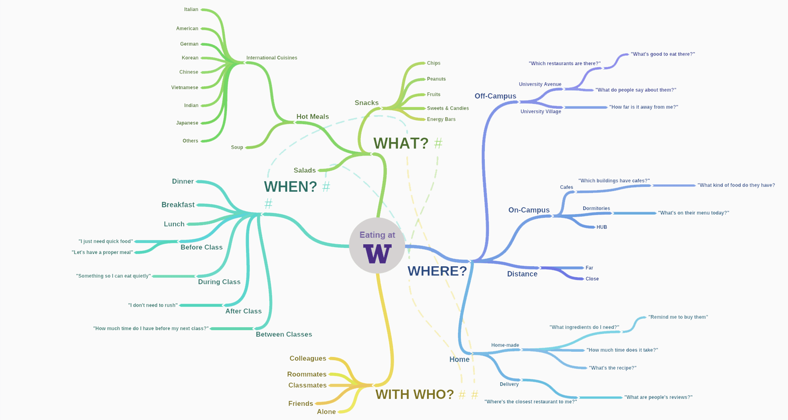
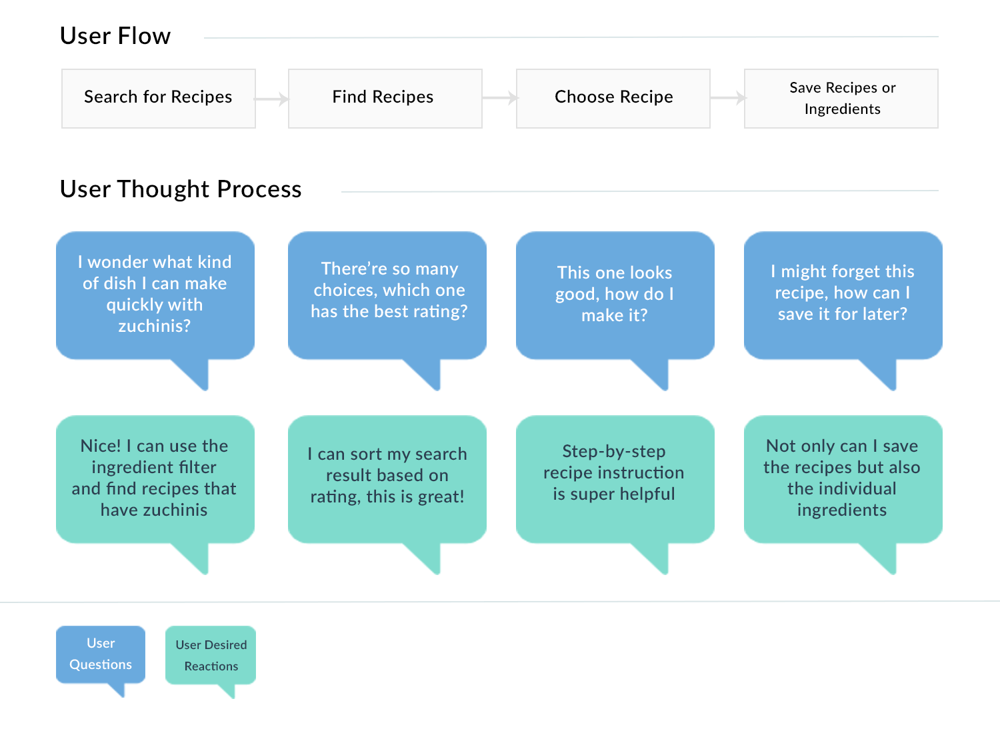
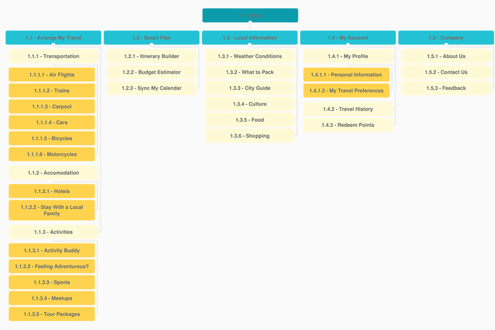
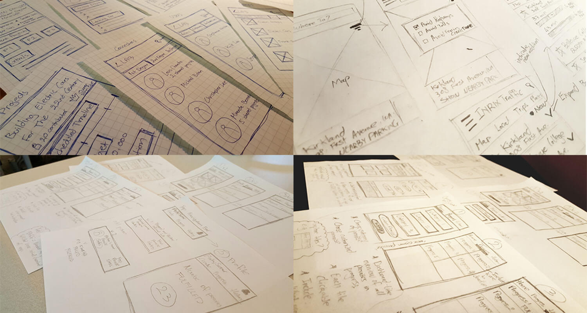
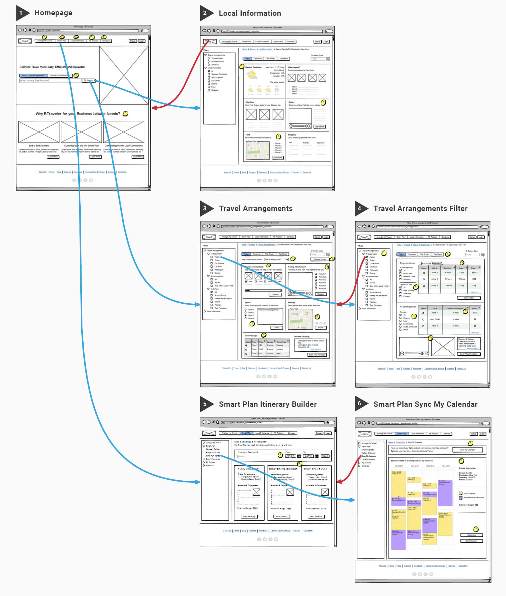

Does this look familiar to you?
It's all about "The Internalized Process"
If there's anything I've learnt throughout my humble design career, it's that there's not a single textbook process from which all the creative minds of the universe can follow. The process you choose, the deliverables you set out to produce, the timeline you are obliging to (or not) etc. all of these choices largely depend on the problem which you're trying to solve at hand. That's the first step, what comes next is a whole complex network of various factors which together influence your final decisions. From budget restraints, resource limitations, to lack of time, anybody who designs professionally knows that the real world of product design is far from the ideal scenario most students find within the comfort of their classroom walls.
Nonetheless, a great design leader once told me:
Whenever I look for a new hire, I always look for a designer who possesses an "internalized design process".
"Internalized" - it's an interesting choice of word, but I think it's a word that makes sense. Without a design process, nobody can ensure that a product is designed in the most "user-centered" way possible. Simply, while not meant to be a hard concrete textbook process, every design organization should direct its initiatives through a path that can provide them with the right practices, methods, and tools...on-demand.
The right methods for the right challenge
I myself possess an internalized process which I try to follow. But instead of showing you what that process is, I will simply lay out the design methods and practices that constitute it. Since design itself is mostly based on trade-offs, where a decision is often made following meticulous considerations of each idea's pros and cons, I've found these methods to be truly effective in helping me design beyond my personal preferences. Depending on the nature of the project, I would typically cut, add, mix and match these different methods to come up with the most fitting approach. Whichever process I end up pursuing, I make sure that the users always stay at its core, and the process is dynamic as well as flexible enough to help me solve a particular problem.
Don't try this.
Please note that these methods are very "design-oriented", in that they don't include any practices specifically related to UX research or usability testing, even though I myself have worked with a variety of them (interviews, contextual inquiries, lab-based/remote testing etc.). Given the focus of my career in design, and the uniquenes of UX Research/Usability Testing, I will probably have to dedicate a whole different section to them...at a later time.
Competitive analysis
Albeit not directly a design method, competitive analysis can be a great starting point for a product design project. A good competitive analysis solidly assesses the strength and weaknesses of your competitors' products, as well as your own, against your users' needs - thereby identifying product development gaps and opportunities.
Mind mapping
Mind maps can tremendously help designers more effectively organize their ideas throughout the design process. Beginning with a central idea, the goal is to branch out to as many thoughts that come up to mind as possible.
I used to follow the practice of creating one big single mind map that strives to encompass every single aspect of the topic. After a while it occured to me that while the final map may look impressive in its complexity, analyzing the heavy network of interwined, overlapping branches could prove an impractical task. Henceforth, I now aim to produce separate mind maps for individual high-level themes that together characterize the overall story.
One of the mind maps created for Husky Yum.
Heuristic evaluation
A heuristic evaluation is an inspection method used by design teams to identify an interface's usability issues based on a set of specific evaluators (the "heuristics"). There exists many sets of heuristic principles out there, but my favorite are definitely Jakob Nielsen's 10 Heuristic Principles.
A heuristic evaluation conducted for GE.
While it should be done collaboratively, I like to conduct quick heuristic evaluations myself everytime a new redesign project is assigned. It is a super quick and inexpensive way to activate my design mindset and place it at the core of the product in question. In turn, I will be able to better understand the product's existing problems, as well as possible paths its design could take.
Affinity diagramming
A simple yet powerful method, affinity diagramms have always found themselves present in almost all of my projects. Essentially, affinity diagrams are used by teams to organize large sets of information (often qualitative) into a more meaningful structure.
Affinity diagramming for a class project (this affinity diagram could actually be be a lot bigger than this. To optimize space, and save sticky notes, we have accumulated similar ideas and findings on single sticky notes. One of them contains as many as 20 points).
Very simply, each team member would dig through the messy information sets and note down as many items as they can on colorful sticky notes (one item per note). Depending on the specificity of the project, these items could be anything from design ideas to usability issues. Once all the items have been gathered, the whole team would collaborate on going through all the present sticky notes and group them under a set of high-level categories. At the end of the exercise, all the items should have been structuredly categorized, allowing the team to take a step back and obtain a better understanding of the information available at their disposal.

A modified affinity diagram created for GE. Here, the high-level categories have been identified as heuristic errors, whereas the categories on the left-hand side are specific stages within the user workflow. The idea is to not only sort information into their respective categories, but to also take an extra step at identifying where they occur within the user flow.
Furthermore, I've also found affinity diagrams to be greatly helpful in getting me started thinking about potential interactions between different components of a system, and the general flowchart that would tie them all together in the most efficient, user-centered, and business-minded manner (especially in projects where the items to be sorted are design ideas).
Persona profiling
Personas are fictional representations of the potential users. While they are purely fictional, their creation is based on facts. They represent the goals, motivations, characteristics and behaviors of a real group of users for which the product is being designed for. Essentially, personas help to humanize the collected user research data. They help the product team agree on who the "users" are by communicating important information about them.
Check out a blog post I wrote on the use of personas and why it's a very useful exercise.

A persona created for Husky Yum.
Empathy mapping
Empathy maps typically come alongside personas. They provide information about a target user group, essentially what they might be thinking, feeling, saying, doing, seeing and hearing, as well as pains and gains that they might experience.
Empathy maps help bring personas to life, and accordingly encourage empathy with users. They are also great at buying in from the bigger product team. It’s strongly recommended to collaboratively create empathy maps, or at least to review it with the wider product team. This exercise will help stick all the stakeholders' foot in the users' shoes.
As the name suggests, empathy maps play a big role in Empathetic Design (I wrote a blog post on this concept).
Storyboarding/User stories
Storyboards graphically illustrate a scenario in a comic-book style and help bring it to life. A storyboard should ideally follow the story of a persona, a problem he/she needs to solve, and how the product can help him/her solve this problem. Like personas, they do a great job at "humanizing" the user research data and shaping up the user stories for consideration. I typically just sketch out story boards on a white board using markers or on papers using pencils.
Storyboards created for different class projects.
Scenario mapping
Scenario maps delineate the steps users go through in order to experience a particular scenario. Under each step, information that is useful when considering a design is additionally provided, which normally includes good ideas, questions, as well as challenges.
Depending on the project, scenario maps can be created to focus on current or future scenarios. The most important factor to be accountable for is that scenario maps are supposed to concentrate on what users will do, rather than how they will do it.
A scenario map created for a class project.
Experience mapping
Experience maps show a user’s complete journey and experience for fulfilling a specific objective. At each stage of the journey, an experience map strives to provide useful information about the users' context, such as their touch points, what they do, think and feel; along with any existing frustrations and opportunites where the product experience can be improved.
Experience maps are great documents for communicating the user experience to the product team - espeically where a multi-channel experience is involved. Experience maps can also be constructed to focus on single broken up tasks rather than a user's end-to-end journey.
An experience map created for a class project.
Mental modelling
Mental models outline the thought processes that users employ when undertaking a given goal. They help to capture user behavior, pain points, motivations, and needs from contextual inquiries. To begin mental modelling, I would group my research findings into logical pillars before mapping out product features for each pillar to identify design gaps as well as opportunities.
A mental model created for Pinky Swear.
Task analysis
Task analysis breaks down a user journey into single sections that focus on individual actions carried out to complete individual goals. With task analysis, users' thought process and desired reactions towards each task flow segment can be better identified.
Task analysis conducted for Husky Yum.
Red-route analysis
In an ideal world, a design team wants to spend time on every single feature of a product. However, this is rarely the case. Given the usual lack of both resources and time, it is very common for teams to engage in debates over which product features or experience to focus on.
A red-route analysis is always a helpful tool in situations like this. Essentially, it helps to prioritize user experience for common tasks performed by users with the product in question. Tasks used by few and rarely can be harder for user to access so that tasks used frequently by most people can be easily accomplished.
User flowchart
User flowcharts illustrate a process, including the different decision points and process flows, through which a user advances through to complete a task. They are great in helping teams outline a potential user journeys and relevant logic utilized by users for a particular product.

A user flowchart created for Husky Yum.
Card sorting
Card sorting is very useful in helping to better understand users' expectations of how information is organized and can be found. This knowledge provides design teams with a more informed starting point when sketching out the structure and content of a website/application, as well as deciding on the appropriate labels and terminology.
During card sorting sessions, participants are asked to organize topics into predefined categories that make sense to them. At the same time, they are fully encouraged to come up with new categories altogether.
A card sorting exercise conducted for a class project using Optimal Sort.
Sitemapping
Sitemaps show the pages and screens that make up a website or app (or pages and screens of a specific section of a website/app). They usually indicate groupings between the various pages and screens and how the information contained withim them are relevant to one another. Sitemaps are great for projects which focus on building an information architecture.
A sitemap created for a class project.
Sketching
I usually don't see sketches as a deliverable. Rather, they should serve as a complimentary artefact to the design process, where the main goal is to bring across an idea or concept. Nonetheless, sketches work very well in the early stages of design due to its fast and inexpensive nature, helping to validate a design idea before committing too much time and resources into it. I've even used paper sketches for usability testing to obtain early user feedback on a specific design.
I have a big love for the practice of paper sketches and believe it should play a bigger role in digital product design. Check out my blog post on this topic.
Sketches created for a combination of class and professional projects.
Wireframing
Wireframes serve as the blueprint for the user interface. They represent the components (text, buttons, images etc.) that make up the interface for a screen or page, as well as the interactive behavior that links all these pages together. Wireframes typically come after a set of ideas have been evaluated and finalized (a step beyond sketching) and aim to visually comminicate a concept to team members, stakeholders, and users for feedback.
Wireframes created for a class project using Balsamiq.
Prototyping
Admittedly, I've found myself to often directly transition from sketching to prototyping nowadays, without relying on wireframes. The reason for this is because so many great tools like InVision, Sketch, Marvel, Proto.io, Flinto etc. exist out there today that can spin up an interactive prototype with a full color scheme and realistic design patterns at an amazing speed. This has largely made the need for black and white wireframes to be irrelevant to the design process.
Then again, it all depends on the nature of the projects and its related influencers. For me, interactive prototypes are essentially a semi-functional mockup of the design that strives to deliver a realistic concept. They can also be used for usability testing and get users involved in the design process. Accordingly, teams can uncover usability issues and validate different design ideas based on the test feedback.

Prototyping for Pinky Swear using InVision.

Prototyping for Pinky Swear using Framer.js (amazing tool!).
Visual design
Visual Design takes place at a much later stage in the process, after the design has gone through multiple iterations as well as tests. This is when the product team has agreed on a new design concept, and designers are responsible for improving its look and feel. This often includes product branding, color scheme, grid structure, typography, and icons.

Visual designing for Joomla.org using Adobe Photoshop.
Design production
While visual designers have traditionally been responsible for preparing the final design assets for development, given the rising trend in Agile Design and the desire for less job specificayion, any UX/UI designers who can get their hands on this job with fluency will prove themselves really valuable.
Developers can truly testify to this. Not only will it expedite the entire product development process, but giving UX Designers full ownership over the design production stage will ensure that their original concepts will be fully and accurately delivered.

Designing, slicing, and exporting icon assets for GE using Adobe Illustrator.
Creating design specifications/styleguides
I metaphorically refer to this task as building the bridge between design and development. The extent to which UX Designers have to oversee this aspect solely depends on the company and team. Like design production, some companies tend to designate this role to visual designers, while others like full-stack designers who can get his hands on anything from conducting contextual inquiries to the creation of design specifications and/or styleguides.
Personally, I think UX Designers should have at least offer some insight into the creation of these deliverables. This will ensure that all the finalized design concepts relevant to the development of the product will be fully understood by developers who will actually build them out. This will avoid any unecessary conflicts between design and development further down the pipeline.

A design specification document created for GE using Adobe InDesign.
NOTE: This page is still being updated.